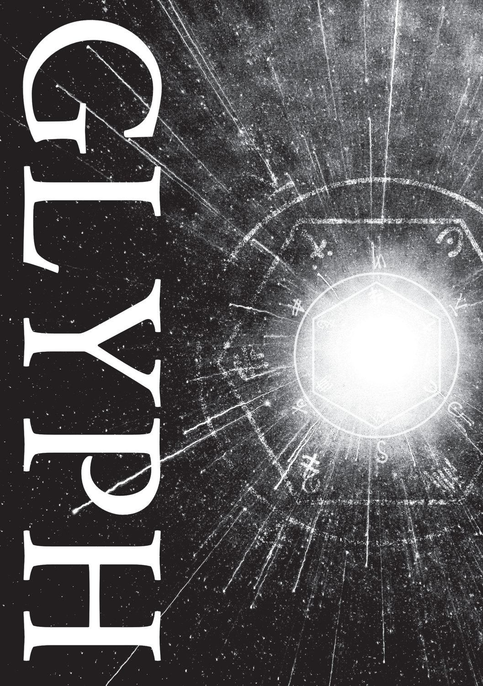
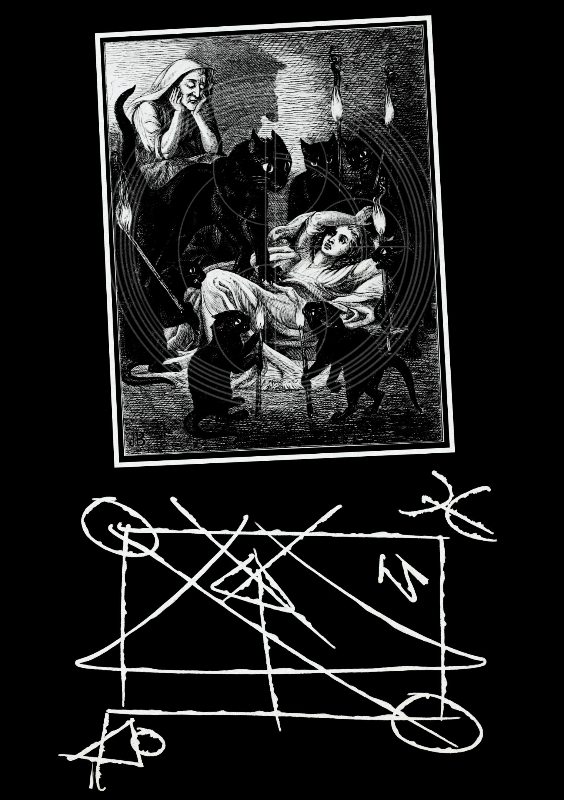
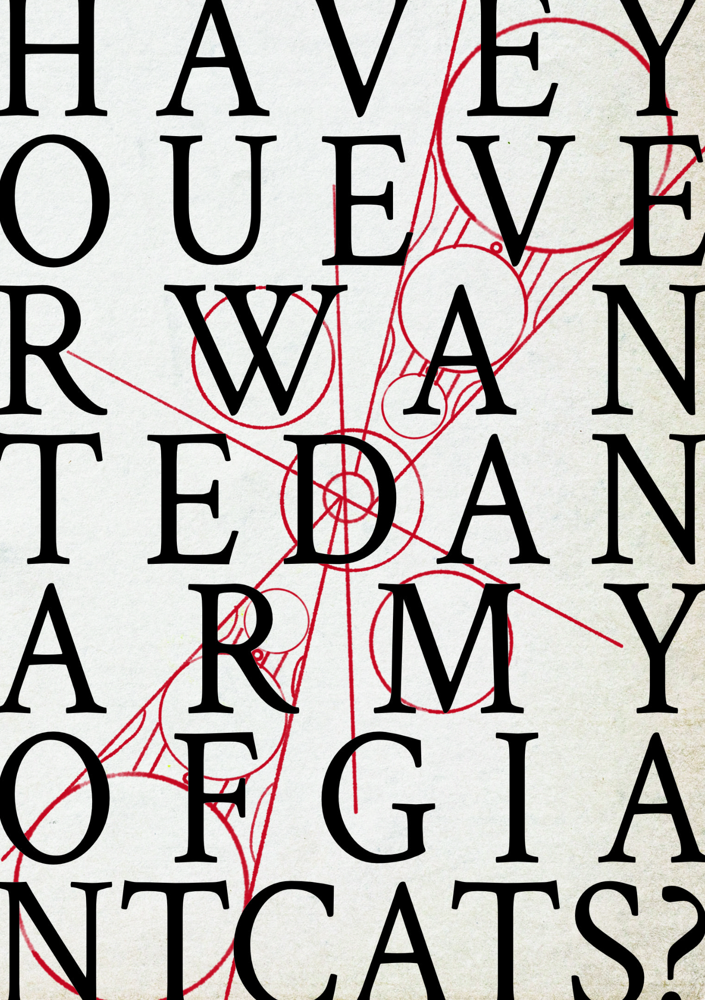

Choose the vessel.
Begin with a shape that can hold pressure. A box, a circle, a face, a mistake you keep repeating.
Occult artbook / personal magical grammar
An artbook-grimoire for drawing personal magical symbols: vessels, lines of power, investitures, and the private machinery of belief.




Method / vessels, lines, investitures
Begin with a shape that can hold pressure. A box, a circle, a face, a mistake you keep repeating.
Draw connections until the thing starts looking back. Geometry is paperwork for the invisible.
Name what the symbol does, then let it do it. Quietly, repeatedly, with enough sincerity to become suspicious.
Released / artbook-grimoire / occult process